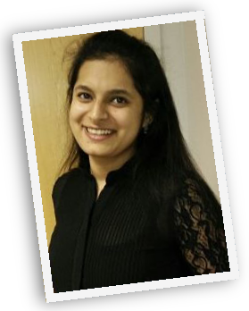

I am an outgoing and energetic (ask anybody) young professional, seeking a
career that fits my professional skills, personality, and murderous tendencies.
My squid-like head is a masterful problem solver and inspires fear in who gaze upon it.
I can bring world domination to your organization.
- Education
-
Rutgers University, New Brunswick, NJ
Masters : Computer Science
GPA : 3.5 / 4
Kurukshetra University, India
Bachelors in Technology : Information Technology
- Skills
-
Office skills
Office and records management, database administration, event organization, customer support, travel coordination
Computer skills
Microsoft productivity software (Word, Excel, etc), Adobe Creative Suite, Windows
- Projects
-
Optical Character Recognition System Spring 2015
MATLAB
- Recognizing text in images with over 95% accuracy, which can be used in many computer vision
applications such as image search, document analysis and robot navigation.
-
Image synthesis and Inpaint System Jun 2015 - till now
MATLAB
- Synthesized image and Image in-painting using Efros and Leung’s algorithm of texture synthesis
where texture was grown using non-parametric sampling by enforce statistics locally one pixel at a time. Obtained 98% accuracy.
- Experience
-
Ericsson, Piscataway, NJ Jun 2015 - till now
Software Developer Cloud Manager Intern
- Developed process flow on open source Camunda for Ericsson Cloud Manager.
- Migrated Jclouds API to Openstack4j for existing test cases.
-
Symstream Technologies Pvt Ltd, India Nov 2012 – Jul 2014
Senior Software Engineer
- Developed modules for a one-stop banking application, a framework that sits between merchant and bank.
- Designed and developed portal for the ATM to service provider/customer.
- Setup deployment environment- database Oracle11gR2, JBOSS server in RedHat, for the projects
- Worked on HobbyZone, an Android social app.
- Lead & mentored interns and fresh graduates in software development on Liferay and Android SDK.
- Awarded Best employee of the quarter in first quarter of 2014.
-
Cignex Datamatics Pvt Ltd, India Dec 2011 - Oct 2012
Trainee Consultant
- Setup and worked on code quality tool SONAR and achieved 95% rule compliance for PMD, Checkstyle and Findbug.
- Owner of the project, handling change requests, working on front end and bug fixing.
- Completed projects migration for different versions of Liferay 5.1 to 6.1.1.
- Achieved zero UAT defects on one of the project.
- Co-curricular Activities
-
- Student web manager for Math Finance Department. at Rutgers University.
- Web Administrator for Graduate Student Association at Rutgers University.
- Grader for DBMS and Computer Graphics at Rutgers University.
- Contribute to Open Source forum of Liferay and Write technical blogs http://michi-path.blogspot.com.
- Participate in Hackathons.
- Headed team-building activities and hosted tournaments once a month in office.
- Interviewed candidates for JAVA and Android positions in Symstream Technologies Pvt Ltd.
- Coordinating, compering, participating and winning many competitions of group dance, creative writing, debate, declamation and elocutions.
- References
- Available on request